Contour detection with a deep segmentation model and area by projective optics, from a minimal camera configuration
Preprint draft, 7 November 2026
Hides and skins are traded by surface area. We present a method that measures that area from one photograph taken straight down onto a table, with a minimal configuration: the distance from camera to table, the focal length, and either the sensor size or the pixel size. The first part of the problem is the exact contour of the hide. A classical OpenCV pipeline was not precise enough where the hide’s edge is close to the table’s colour, so we compared four class-agnostic segmentation networks and integrated IS-Net. On synthetic photographs of known area its outline lies closer to the true edge than that of the faster U²-Net, but on four multi-coloured hides of a second set IS-Net alone takes part of the hide for background, where U²-Net does not. A second, classical step therefore finds the background from the image border, on a shrunk and median-filtered copy, and replaces the network’s region when the object it leaves holds at least 95 % of that region and is more than 10 % larger. The second part turns the pixels inside the contour into square millimetres, by the central projection of a plane parallel to the sensor, completed by the camera data in the photograph’s metadata. On synthetic shapes of the same kind the contour’s area error varies by less than 0.1 % in all but one configuration and is biased outward by 0.6–1.8 %. The background step repairs the four failed hides and fails where the support does not fill the frame. An uncertainty budget shows that the optics dominate unless the scale is calibrated on a reference of hide size.
In the leather industry raw hides, crust and finished leather are bought and sold by surface, in square metres or square feet (1 ft² = 0.09290304 m², exactly). The surface also bounds what can be cut from a hide. A hide is not a simple shape. It has legs, a neck and a tail region, an irregular and often curled edge, sometimes holes, and a colour that may be patterned, dark, or close to that of its support.
Industrial measurement uses dedicated machines. ISO 11646 [12] (IULTCS/IUP 32) specifies the reference method for dressed and other dry flexible leathers: a mechanical pin-wheel machine, checked with templates whose area lies within ±50 % of the leather measured. ISO 19076 [17] specifies the method for electronic machines, whose opto-electronic sensor arrays or digital cameras detect the leather, for dry and wet flexible leather. Both standards describe dedicated measuring machines.
A camera above an ordinary table needs no such machine. It keeps a photograph of every measurement as evidence and gives the outline as geometry for cutting. The challenge we address is to obtain a correct area from such a set-up with the least possible configuration: three values the operator can know without a calibration laboratory.
The problem then splits into two independent sub-problems, which give this article its structure:
Section 2 states the problem and its configuration. Section 5 describes the implementation. Section 6 evaluates both parts, and Section 7 discusses their limits.
Input. One photograph of a hide lying flat on a table, taken by a camera whose optical axis is perpendicular to the table, and the minimal configuration of Section 1.2. The photograph’s own pixel count is always known. Its EXIF metadata [13] may also carry the focal length and the sensor geometry.
Output. The area of the hide in mm², its outline (with holes) as geometry in millimetres, and a record that allows the measurement to be checked again.
Assumptions. The hide is flat. The camera is perpendicular to the table. The whole hide is in the picture, with table around it. The table differs visibly from the hide.
Target. Where trade measurement of leather area is under legal control, the European Measuring Instruments Directive sets the maximum permissible error of an area measuring instrument at 1.0 %, but not less than 1 dm² [18]. We use this figure as the reference against which to judge the results.
Fig. 1 shows what the three values give for a photograph of 1600 × 1200 pixels: the pixel pitch, the size of one pixel on the table, and the part of the table the photograph covers.
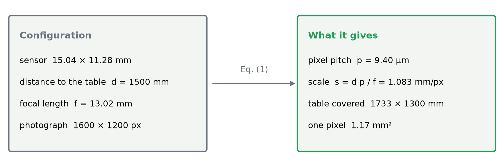
The first implementation used OpenCV [16]. It took the table’s colour
as the median of a band along the image border, in CIELAB. It
thresholded each pixel’s colour distance to that colour with Otsu’s
method [4] and cleaned the result morphologically. It refined the result
with GrabCut [5], kept the largest region, and traced the contour with
findContours, which implements border following [6].
On real photographs this was not precise enough. On a cowhide (Fig. 2) the outline cut into the hide where its pale edge is close to the table’s colour, and took in a piece of the table at a leg. The method has three structural weaknesses:
These are limits of colour statistics, not of contour tracing. The
tracing itself (findContours) is precise, and the method
still uses it. What had to change was the decision which pixels are
hide.
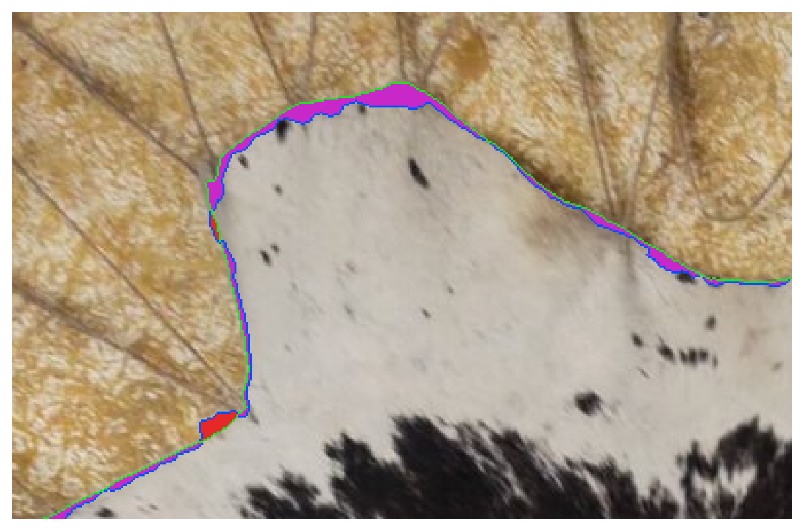
We replaced the colour statistics with a learned,
class-agnostic segmentation network. Such a network
separates the foreground object of a photograph from its background
without being told what the object is, which suits hides of any colour
on any table. Four open models were compared on two sample photographs,
the black calf skin and the cowhide (model_comparison in
this article’s folder): U²-Net [2], IS-Net [1] (the “general use”
weights of dichotomous image segmentation), BiRefNet-lite and BiRefNet
[3]. For the comparison all four ran through rembg 2.0.86
with the same weights (ONNX, onnxruntime 1.31.1, on an Intel Core
i7-10510U CPU with 4 cores and 8 threads, no GPU), one call after a
warm-up. Each mask was thresholded at 50 % and traced with
findContours.
| Model | black calf (1334 × 1602) | cowhide (1600 × 1200) |
|---|---|---|
| U²-Net | 0.53 s | 0.79 s |
| IS-Net (general use) | 1.48 s | 1.64 s |
| BiRefNet-lite | 11.25 s | 13.74 s |
| BiRefNet | 22.71 s | 30.74 s |
Table 1 — Run time per photograph of the four candidate models (rembg, 2026-11-05).
The findings are as follows:
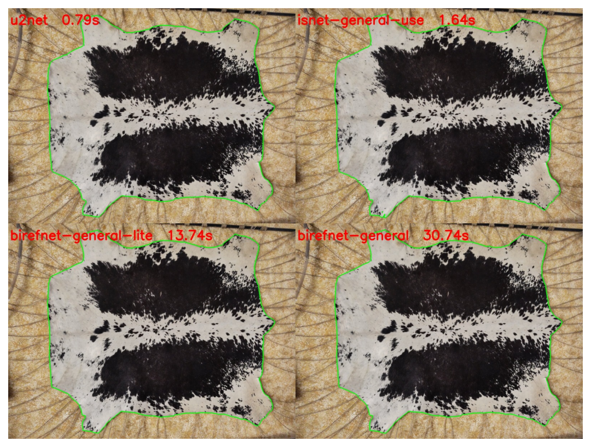
Table 1 rules out BiRefNet: its masks match the others at 7.6 to 18.7
times the run time of IS-Net. We compared the remaining two, U²-Net and
IS-Net, on photographs of known area (accuracy.py; every
photograph is in model_accuracy.csv): the 40 synthetic
photographs of Section 6.1 and the 40 of the second generator of Section
6.3. Steps 2 to 4 of Section 3.4 were the same for every run, with the
background check off, so that the network alone is measured. Step 1, the
inference, was this article’s for IS-Net; for U²-Net, rembg’s pipeline
replaced it.
The two networks therefore did not run through the same step 1. IS-Net ran as this article’s TorchScript model, U²-Net as rembg’s ONNX model at 320 × 320, and the two pipelines resize, scale and normalise differently. As a control, rembg’s IS-Net ran as well, also with rembg in place of step 1. Per photograph it differs from the TorchScript IS-Net by a median of 0.02 percentage points on both sets, against 0.35 (synthetic) and 0.18 (second) between IS-Net and U²-Net. Through the same rembg pipeline, IS-Net still lies closer to the true edge than U²-Net on the synthetic set of Section 6.1: 1.27 px against 2.39 px on average, a mean error of +0.96 % against +1.45 %, and 18 photographs over 1 % against 29. On failures the pipeline matters more: on one inverted hide rembg’s IS-Net reads −0.71 % and the TorchScript one −21.9 %. Which difference between the pipelines causes this was not tested.
We kept IS-Net with the background check of Section 3.5. As the
method ships it, IS-Net has the smaller edge bias on the synthetic set;
the check changes none of those photographs (Table 2). On the second set
the check repairs the four inversions, which leaves 3 photographs over 1
% and 1 over 5 % (Table 4), against 3 and 0 for U²-Net alone. That one
failure, a mat smaller than the frame, is known (Section 6.3). U²-Net
has three advantages: no gross failure on the second set, two to three
times the speed, and a clean export to TorchScript
(export_u2net.py; the traced model gives the same output as
the PyTorch model it was traced from). Neither network was run on real
photographs of known area. U²-Net was not run with the background check,
nor through this article’s step 1. So the data do not show which is
closer on real hides. U²-Net is the candidate to evaluate next (Section
7).
IS-Net is built from plain convolutions, so it exports to a single
TorchScript file with torch.jit.trace [15], which runs on a
CPU without the model’s own code and without a GPU. Its code is
published under the Apache-2.0 licence. The network’s code and weights
are downloaded from pinned addresses, checked by their SHA-256, and
exported once (Section 5).
The network gives each pixel a probability of belonging to the object. The steps that turn this into a contour are:
findContours [6] traces the
outer ring and the holes. The Douglas–Peucker algorithm [7] simplifies
them within 0.5 mm, and the tolerance is halved until the rings are
simple and properly nested.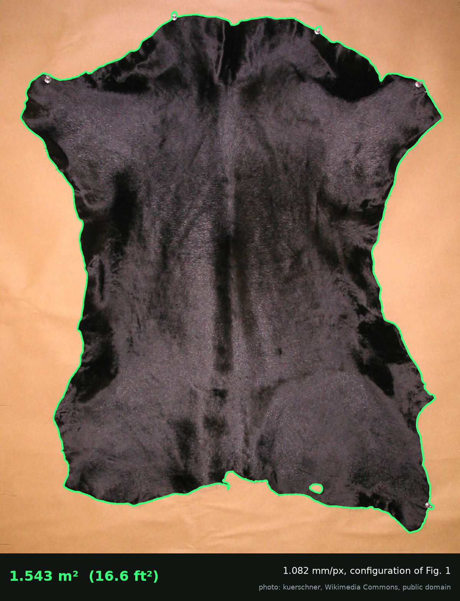
A class-agnostic network decides what the object is from appearance. On a hide of two strongly different colours this decision can go wrong. On a black and white calf skin on a dark carpet, IS-Net took one black patch for the object: 4.9 % of the photograph, against about 77 % for the hide (Fig. 5a). Section 6.3 shows the same inversion on a synthetic cowhide.
The second step therefore models the table instead of the hide. It assumes that the image border shows the table, that the table is plain, and that its brightness varies smoothly across the photograph. The background is whatever matches that model and is connected to the border; the object is what remains, whatever its colours. The step works from coarse to fine.
The rule. The object found from the background replaces the network’s region only when it holds at least 95 % of that region and is more than 10 % larger. Otherwise the network’s region stands. That happens when the two agree up to the edge, when the background step finds nothing, or when they disagree because too little of the border is plain table, for example where the hide runs along much of the edge of the photograph. A hide that only touches the edge in places can still pass the rule, as the spotted calf below does. Where the background step fails, the rule mostly keeps the network’s region, so the step’s result matters only when it contradicts the network in this one way.
On the spotted calf the rule takes the background’s object: 77.3 % of the photograph. The skin touches the frame at its left and right edges, so this photograph shows the outline, not a measurable area. Enough table remains on the border for the background model, and the black patches cut by the frame are kept. Of the six real sample photographs it changes only that one. A whole analysis, network included, took a median of 2.3 s at 1600 × 1200 and 7.5 s at 4000 × 3000 on the CPU of Section 3.2.
Limits. The step is built on the image border being table, and it fails where that is not true. A hide that fills the frame, or runs along much of its edge, leaves too little table at the border. A cutting mat smaller than the frame puts two backgrounds on the border, and the table beside the mat is then taken for hide. Parts narrower than about two coarse pixels are removed with the lines: thin legs, and holes under about 20 photo pixels at 1600 px or 50 at 4000 px. A table close to the hide’s colour, or a grey hide that is only a little darker than a grey table and so looks like a shadow, hides the edge. In most of these cases the rule keeps the network’s region, because the object found does not hold it or is not larger. The mat smaller than the frame is the exception: the table strip makes the object larger while it still holds the network’s region (Section 6.3).
![Fig. 5 — The background check on a black and white calf skin on a dark carpet (“Calf fur skin, spotted” by kuerschner, Wikimedia Commons, public domain). (a) IS-Net alone takes one black patch for the object (red). (b) The coarse copy, 160 px on its longest side, median-filtered: the carpet’s texture is gone. (c) Deviation of each coarse pixel from the background model, in robust standard deviations; blue: the edge of the background reached from the border (deviation at most 6). (d) The outline after the fine stage, which the rule takes (green).](figures/fig_background.png)
For a camera whose optical axis is perpendicular to a plane at distance , the pinhole model [8] maps a point of the plane to the sensor point
Every point of the plane is at the same depth, so the mapping is a uniform scaling with magnification . Straight edges stay straight, and areas scale by everywhere in the field. A sensor pixel of pitch therefore covers, on the table, a rectangle of
and the hide, made of pixels inside the contour of Part I, has the area
Equation (2) is the measurement equation. The area is counted on the pixels of the mask, not on the simplified polygon, so the reported area is exactly the mask’s. Because depends on , a relative error in , or becomes about in the area. The outline is mapped with along columns and along rows, so non-square pixels do not distort the shape.
![Fig. 6 — Geometry of the measurement, in three dimensions. The table plane, the lens and the sensor plane are parallel, and the third dimension is the distance along the optical axis: u from the table to the lens, v from the lens to the sensor. Rays through the lens centre map the area the photograph covers onto the sensor, inverted (green), and one sensor pixel of pitch p onto its footprint s \times s on the table (red, enlarged). Not to scale. The pinhole scale s_0 = p\,d/f approximates the thin-lens scale s = p\,(u-f)/f.](figures/fig_geometry.png)
Equation (1) needs , and . The configuration supplies them, and the photograph can complete it:
Each value carries its source (photograph or configuration), which is reported with the measurement. The sample cowhide carries no focal-plane resolution. Its photograph gives mm and mm, so the 35 mm route gives µm; with mm this is mm/px.
A real objective focused on the table forms its image at the distance given by the thin-lens equation [14]:
with the distance from the lens’s front principal plane to the table. The true pixel footprint is , while Eq. (1) with gives . The pinhole model therefore overestimates the area by
This is +1.76 % for mm at 1500 mm, +0.75 % for a 5.6 mm phone lens and +4.8 % for a 35 mm lens (Fig. 7). The EXIF focal length is nominal (focused at infinity), and where the principal plane lies inside the lens is unknown. Neither can be read from the photograph. A calibration with a reference object absorbs both (Section 6.5).
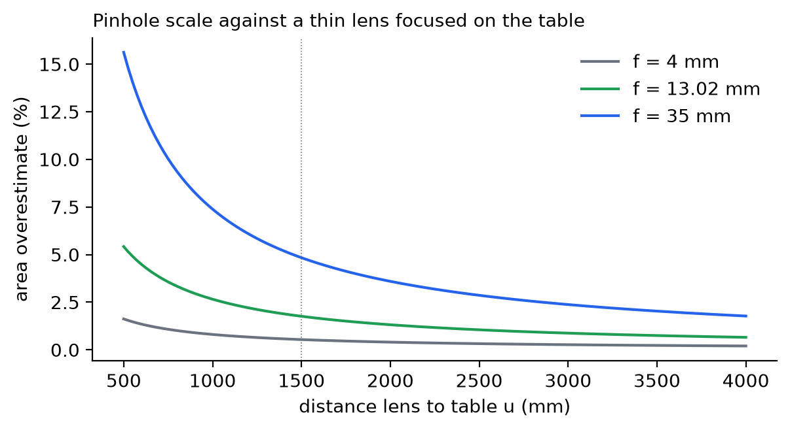
Tilt. A sensor tilted by foreshortens a centred hide by : 0.06 % at 2°. Off the axis the depth varies as . A hide whose centroid lies from the axis is therefore mis-measured by : 1.4 % at 2°, 300 mm and mm.
Lens distortion. With radial distortion [10], an area element at normalised radius is scaled by about . The coefficients must be measured per lens [9]. The method does not yet correct for distortion.
Thickness and relief. The top of a hide of thickness lies closer to the camera: + in area, 0.67 % for 5 mm at 1500 mm. A fold or a wave lowers the projected area below that of the leather. The measured quantity is the projection of the hide on the table plane.
Hair. On a hair-on hide, hair can lie beyond the edge of the skin. The outline then follows the hair as seen from above, not the skin beneath it, and the area is larger by about the hair’s overhang times the perimeter. Which of the two edges defines the area of a hair-on hide is not settled here. The synthetic hair hides of Section 6.3 have no hair beyond the skin, so they do not measure this effect.
The method is implemented in Python, with OpenCV [16] for the image processing and PyTorch [15] for the network, in the scripts published with this article (Data and code availability). They follow the structure of the article:
model/export_isnet.py). It
downloads the code and the general-use weights of IS-Net from pinned
addresses, checks them by their SHA-256, and exports the network to
TorchScript (Section 3.3).algorithm/).
isnet.py gives the network’s probability,
masks.py the cleaning of step 2 and the hole operations,
background.py the background check, and
contour.py the steps of Section 3.4 with the rule of
Section 3.5. classical.py is the colour pipeline of Section
3.1, kept for the comparison of Section 6.4.algorithm/camera.py). It completes the configuration from
the photograph’s EXIF data by the rules of Section 4.2, and gives the
scale, Eq. (1), and the area counted on the mask, Eq. (2) (Fig. 8). Each
value carries its source, photograph or configuration.experiment/).
synthetic.py draws the photographs of known area of Section
6.1, and measure.py makes every measurement of Sections 3.5
and 6.figures/).
They are drawn from the experiment’s files, and the analytical numbers
of Sections 4 and 6.5 are computed.One command runs the model export, the experiment and the figures, and a second makes this document. The synthetic photographs are drawn from fixed seeds, and on them and on the real photographs the method with IS-Net gives the same numbers on every run, apart from the run times. The classical contour of Section 3.1 is not as repeatable: between two runs its pixel count changed on three real photographs (by up to 0.2 %). GrabCut starts its colour models by k-means, which draws on OpenCV’s shared random number generator, and the scripts do not seed it. Analysing the same photograph three times in one process changed its count on all three photographs. With the seed set before each call, every count repeated exactly. The two photographs of Table 5 did not change between the runs.
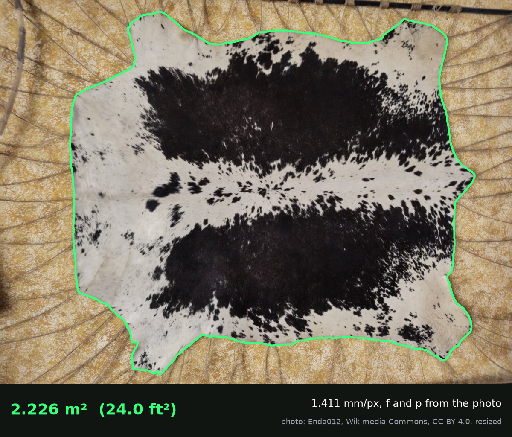
A real hide has no exactly known area. To measure Part I alone we therefore rendered photographs of hide-like shapes whose area is known exactly.
Shapes. Each outline is . It has random harmonics , four legs at ( rad), and a horizontal stretch of 1.2–1.4. An elliptical hole is placed inside. The true area is the shoelace area of the outline minus the hole.
Rendering. Each shape is filled with sub-pixel anti-aliasing over a textured table. The hide is either cowhide-like (white with black blotches) or leather-like (brown with shading). A soft shadow and sensor noise ( grey levels) are added.
Design. Two resolutions (1600 × 1200 and 4000 × 3000), two looks, two sizes (about 45 % and 8 % of the frame) and five seeds give 40 photographs, plus the same 40 without the shadow as a control. The scale is set to 1 mm/px, so Part II plays no role. The contour is that of Sections 3.4 and 3.5, unchanged. Each photograph is analysed twice: as the application does it, with the background check of Section 3.5, and by the network alone.
Metrics. The area error is and the IoU is taken against the true mask. The mean edge offset is the average outward displacement of the outline that would produce .
| Photo | Look | Size | mean ± sd (%) | range (%) | (px) | (model cells) | IoU |
|---|---|---|---|---|---|---|---|
| 1600 × 1200 | cowhide | large | +0.72 ± 0.40 ¹ | +0.00 … +0.96 | +1.12 | 0.82 | 0.9923 |
| 1600 × 1200 | cowhide | small | +1.71 ± 0.05 | +1.66 … +1.79 | +1.10 | 0.80 | 0.9911 |
| 1600 × 1200 | leather | large | +0.85 ± 0.04 | +0.81 … +0.89 | +1.34 | 0.98 | 0.9942 |
| 1600 × 1200 | leather | small | +1.59 ± 0.08 | +1.50 … +1.71 | +1.02 | 0.75 | 0.9916 |
| 4000 × 3000 | cowhide | large | +0.65 ± 0.03 | +0.63 … +0.70 | +2.55 | 0.75 | 0.9945 |
| 4000 × 3000 | cowhide | small | +1.12 ± 0.03 | +1.08 … +1.16 | +1.78 | 0.52 | 0.9918 |
| 4000 × 3000 | leather | large | +0.62 ± 0.01 | +0.61 … +0.64 | +2.39 | 0.70 | 0.9944 |
| 4000 × 3000 | leather | small | +0.93 ± 0.05 | +0.88 … +0.98 | +1.51 | 0.44 | 0.9923 |
Table 2 — Area error of the contour of Part I (IS-Net, then the background check) on synthetic photographs with a shadow (n = 5 per row). The background check changed none of these photographs, so the network alone gives the same numbers. ¹ One photograph reads +0.005 % (Section 6.3).
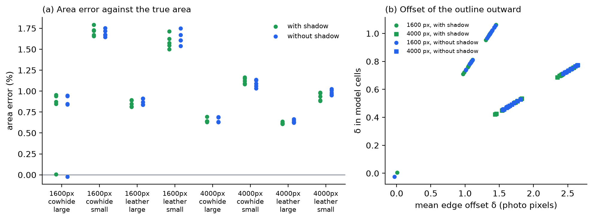
Table 2 and Fig. 9 lead to four observations:
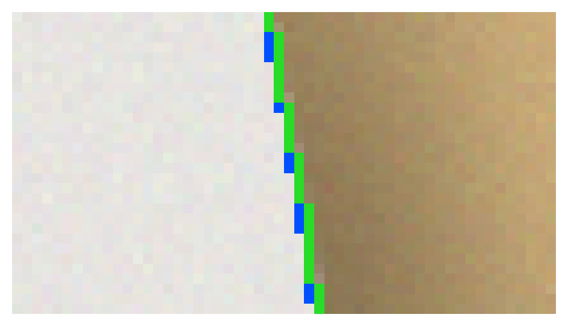
The first two photographs of each configuration were analysed again at by the network alone, without the background check, because the threshold acts on the network (Fig. 11). The offset falls almost linearly with :
| at 1600 px, mean [range] | at 4000 px, mean [range] | |
|---|---|---|
| 0.3 | +1.61 [+1.33, +1.82] | +2.99 [+2.35, +3.59] |
| 0.5 | +1.20 [+0.97, +1.38] | +2.05 [+1.44, +2.64] |
| 0.7 | +0.79 [+0.58, +0.98] | +1.11 [+0.52, +1.69] |
| 0.9 | +0.26 [+0.08, +0.39] | −0.16 [−0.75, +0.40] |
Table 3 — Edge offset (photo pixels) against the threshold.
A higher threshold removes most of the bias, but not at every resolution alike: at the outline still lies 0.26 px outside the edge at 1600 px and already 0.16 px inside at 4000 px. We therefore keep and treat the offset as a systematic error that can be corrected (Section 7).
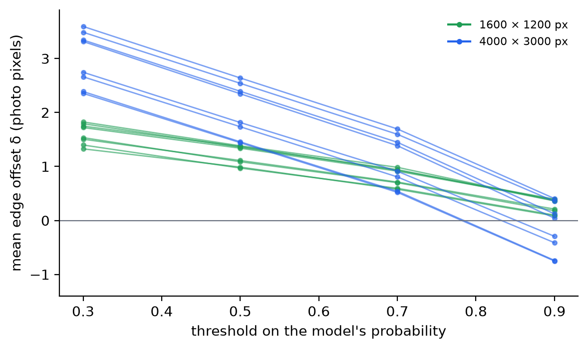
A class-agnostic model decides what the object is from appearance, and a hide of two strongly different colours can be read either way: the dark patches as the object and the light hide as background. On the spotted calf of Fig. 5 the network took one black patch for the object. On the 80 photographs of Section 6.1 it happened only in a small form. On one large cowhide at 1600 px, a white region between black blotches was cut out as a hole: 0.95 % of the hide, which the outward bias of the outline cancels to +0.005 % (−0.02 % without the shadow). The background check leaves that photograph as it is, because the difference is far below the 10 % of its rule.
To measure the failure and the check, we used a second generator of
synthetic photographs with true masks
(experiment/generate_hides.py). Its 40 photographs show
cow, calf, goat and sheep skins, 10 with hair and 30 leather, in 15
colourings from plain to two-tone, speckled and three-coloured, on six
supports: kraft paper, concrete, a grey table, a white studio sweep,
wood, and a green cutting mat.
| 40 photographs | Network alone | With the background check |
|---|---|---|
| median of the absolute area error | 0.13 % | 0.13 % |
| photographs over 1 % | 4 | 3 |
| photographs over 5 % | 4 | 1 |
Table 4 — The second generator’s photographs, against their true masks.
The check took the background’s object on five photographs (Table 4). On four hair hides, two-tone, speckled or three-coloured, the network had taken part of the hide for background, from −22 % to −61 %. The check brings them to within 1.8 %. On the speckled hide of Fig. 12 the error goes from −60.6 % to −0.5 % and the IoU from 0.394 to 0.995. On the fifth, a tan leather on a cutting mat smaller than the frame, the check made a correct measurement wrong: −0.2 % became +80 %. The table beside the mat is a second background at the border and was taken for hide, the limit Section 3.5 names. On the other 35 photographs the check changed nothing.
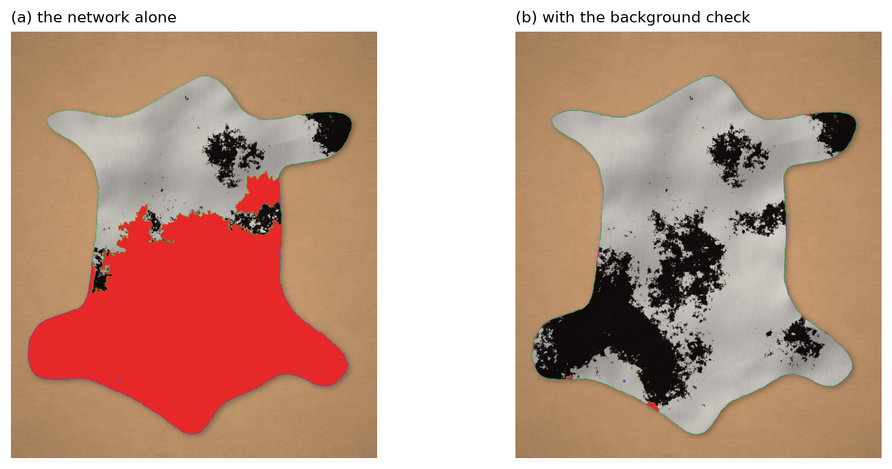
Real photographs have no ground truth. We compared the IS-Net contour with the OpenCV pipeline of Section 3.1, with holes filled in both:
| Photograph | Size (px) | OpenCV − IS-Net area | IoU |
|---|---|---|---|
| cowhide | 1600 × 1200 | −0.75 % | 0.9911 |
| black calf skin | 1334 × 1602 | −0.27 % | 0.9972 |
Table 5 — The two contour methods on real photographs.
On these flat, well-contrasted photographs the two methods agree closely (IoU 0.991–0.997), and the IS-Net area is the larger by 0.27–0.75 %. That is consistent with the outward offset of Section 6.1. The local errors of the classical method (Fig. 2) are small in area here. They matter where the hide’s edge is close to the table’s colour or the outline takes in table, as at the cowhide’s leg in Fig. 2, and in the reliability of the outline as cutting geometry. A large disagreement between the two methods would flag a measurement for checking. The background check of Section 3.5 now handles the case of Section 6.3 automatically. On the cowhide and the black calf skin it leaves the network’s contour unchanged.
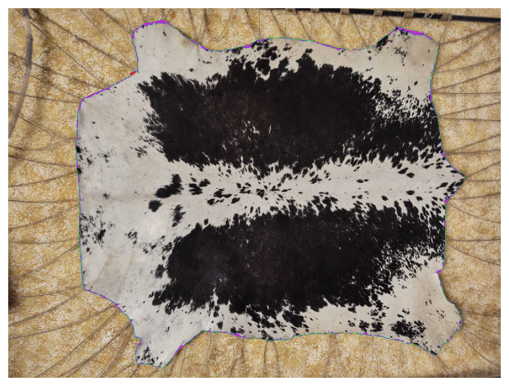
Following the GUM [11], we combine relative standard uncertainties. Linear terms are combined in quadrature and doubled for the area, and rectangular distributions of half-width contribute . The inputs marked assumed are typical values, not measurements of an installation.
A — the minimal configuration with nominal values (hide of about 2 m², mm):
| Source | Assumed | Relative standard uncertainty |
|---|---|---|
| distance to an uncertain lens reference | ±10 mm | 0.38 % (length) |
| focal length, actual against nominal | ±2 % | 1.15 % (length) |
| 35 mm-equivalent focal length, maker’s rounding | ±2 % | 1.15 % (length) |
| combined, area | 3.4 % (), ±6.7 % () |
The budget is for the 35 mm route of Section 4.2, which the sample cowhide takes. The photograph’s own cancels there, so the two focal-length rows are not one error counted twice. They are the two independent errors that remain in : the lens’s actual focal length against the nominal one, and the rounding of to a whole millimetre (23 mm on the cowhide, up to ±2.2 %). | systematic: thin-lens focus, Eq. (3) | mm | +1.76 % | | systematic: contour offset, Table 2 | | +0.6 … +1.8 % |
B — calibrated scale. A flat reference board of known area is measured once at the working distance, and the configured distance is adjusted until the board reads correctly. This calibrates the product and absorbs the distance, focal length, pitch and thin-lens terms of A:
| Source | Assumed | Relative standard uncertainty (area) |
|---|---|---|
| reference board 1000 × 1000 mm | ±0.5 mm per side | 0.04 % |
| contour, spread between shapes | sd, Table 2 | 0.06 % |
| contour offset, board against hide, not corrected | = 1.23 px at 1.41 mm/px, synthetic | 0.20 % |
| repeatability of the photograph (placement, light, noise) | not measured | open |
| thickness, board against hide | ±2 mm | 0.15 % |
| tilt 1°, hide 100 mm off centre | 0.13 % | |
| lens distortion | not measured | open |
| combined, without the two open rows | ≈ 0.29 % (), ≈ ±0.6 % () |
The combined value is a lower bound until the two open rows are measured. The contour-offset row is not random: it is the −0.2 % by which a hide reads low after calibration on the board, derived below. It is counted here as an uncertainty because it is left uncorrected. The correction of Section 7 would remove it, and the row would then become the uncertainty of .
The reference must be of hide size. The contour offset gives a bias that depends on the shape. With mm, a 500 × 400 mm card reads +1.6 % while a 2.2 m² hide reads +0.50 %. The hide is given the perimeter-to-area ratio of the synthetic shapes of Section 6.1, , so its perimeter is about 6.4 m. So calibrating on the card would make every hide read about 1.1 % low. A 1000 × 1000 mm board (+0.70 %) leaves about −0.2 %. ISO 11646 asks the same of its templates (±50 % of the leather measured) [12].
Part I. Replacing colour statistics with a class-agnostic network fixed the failure that motivated it, at the cowhide’s pale edge (Fig. 2). Of the four networks compared, BiRefNet gave no visible gain at 7.6 to 18.7 times the run time of IS-Net. Of the other two, IS-Net lies closer to the true edge on the synthetic photographs of Section 6.1, while U²-Net is two to three times as fast and did not fail on the second generator’s hides (Section 3.3). On synthetic shapes IS-Net’s area error varies little and is biased outward by about one model cell. Because the bias is stable, it can be corrected by , with measured on reference shapes, instead of by raising the threshold, whose effect depends on the resolution (Section 6.2). The figure–ground inversion on two-tone hides is now handled by finding the background first (Section 3.5). The network and the classical step fail in different ways. The network can misread the hide’s own colours, while the background step depends on a plain table at the image border. The rule takes the background’s object only when it holds at least 95 % of the network’s region and is more than 10 % larger, so the network’s region stands unless the network has missed a large part of the hide. One case still defeats the rule: a mat smaller than the frame, whose border shows both mat and table. Two further aids remain useful: a support whose colour differs from both colours of the hide, and the operator’s check of the overlay.
Part II. The minimal configuration suffices in principle, because a plane parallel to the sensor maps with a uniform scale. In practice its nominal values carry a few per cent of uncertainty (budget A), above the 1.0 % reference of legal metrology [18]. A single calibration on a reference of hide size brings the expected uncertainty to about ±0.6 % (budget B), provided the camera is perpendicular, the hide is centred, lens distortion is small and a new photograph of the same hide gives the same area. The last two conditions are still to be measured. The ±0.6 % is an expected uncertainty computed from assumed inputs, not an accuracy shown on real hides.
Legal metrology. The method has not undergone any conformity assessment. It must not be used to set prices where the law requires a verified instrument until such an assessment has been passed.
Validation still needed. The accuracy statements here are synthetic (Part I) or analytical (Part II). A metrological validation needs three things. The first is reference targets of certified area and hide-like perimeter. The second is real hides measured independently by the method of ISO 11646 [12] or ISO 19076 [17], or on a calibrated machine. The third is a repeatability and reproducibility study across operators, lighting and cameras. ISO 19076, which covers camera-based machines and wet leather, is the natural frame for this method. The choice of the network needs the same real hides: U²-Net should be compared with IS-Net on them, through the same pipeline and with the background check.
Threats to validity. The synthetic textures are simpler than real hair and grain, and the synthetic hair stays inside the skin’s outline. The run times and the agreement of the four models (Table 1) come from two photographs. The accuracy comparison of U²-Net and IS-Net used synthetic photographs only, with the two networks run through different pipelines. The thresholds of the background check (deviation 6, shadow 1.15, the 95 % and 10 % of the rule) were tuned on the samples of this study. The real photographs’ camera parameters are only partly known, and all timings come from one machine.
The area of a hide can be measured from one photograph and a minimal configuration — distance, focal length and sensor — by solving two problems separately. For the contour, a classical OpenCV pipeline was not precise enough. A comparison of four class-agnostic networks led to IS-Net, which lies closer to the true edge than the faster U²-Net on the synthetic photographs of Section 6.1. On synthetic photographs its area error varies by less than 0.1 % between shapes of the same kind in all but one configuration, with a small outward bias that can be corrected. Where the network takes the patches of a spotted hide for the object, a classical step, which finds the table from the image border on a coarse, median-filtered copy and refines the edge at full size, recovers the whole hide. For the area, central projection of the table plane gives a uniform pixel footprint. The minimal configuration fixes its value, the photograph’s metadata completes it, and a calibration on a hide-sized reference removes the optical errors that the configuration alone cannot see. The next step is a metrological validation on real hides against a reference method, with U²-Net as the alternative network to test there.
The scripts of Section 5 are published with this article, in the
folder docs/articles/contorno-area-measurement/scripts of
the Contorno repository. scripts/README.md maps every
figure and table to the script that makes it. The model comparison of
Sections 3.2 and 3.3 is in scripts/model_comparison:
compare.py (Table 1, Fig. 3), accuracy.py (the
accuracy of U²-Net and IS-Net) and export_u2net.py (the
export of U²-Net to TorchScript). Their images, run times and
model_accuracy.csv are in model_comparison,
with a README. The grid of Fig. 3 was assembled from the outputs of
2026-11-05 by grid.py. The synthetic photographs of both
generators are regenerated deterministically from their seeds. The
IS-Net code is published under the Apache-2.0 licence. The general-use
weights are fetched from a Hugging Face mirror that declares Apache-2.0,
while the original repository states no licence for them, and the DIS5K
training data has its own terms of use. U²-Net’s code is published under
the Apache-2.0 licence. Its weights have the same standing as IS-Net’s:
the Hugging Face mirror that export_u2net.py fetches
declares Apache-2.0, while the original repository states no licence for
them. Its training data (DUTS-TR) has its own terms, which were not
checked. The weights are not redistributed with this article. The
provenance of the sample photographs is recorded in
docs/samples/SOURCES.md.
Photographs. The cowhide is “Stretched Cowhide Skin” by Enda012 (commons.wikimedia.org/wiki/File:Stretched_Cowhide_Skin.jpg), licensed under CC BY 4.0 (creativecommons.org/licenses/by/4.0/); it was resized, and outlines and colour marks were drawn on it. The black calf skin is “Kalb schwarzgefaerbt” and the spotted calf skin is “Calf fur skin, spotted”, both by kuerschner, Wikimedia Commons, public domain.
The author used an AI assistant (Claude, Anthropic) to draft parts of the text and to write the experiment and figure scripts. The author designed the study, reviewed and revised the text, checked the results, and takes full responsibility for the content.